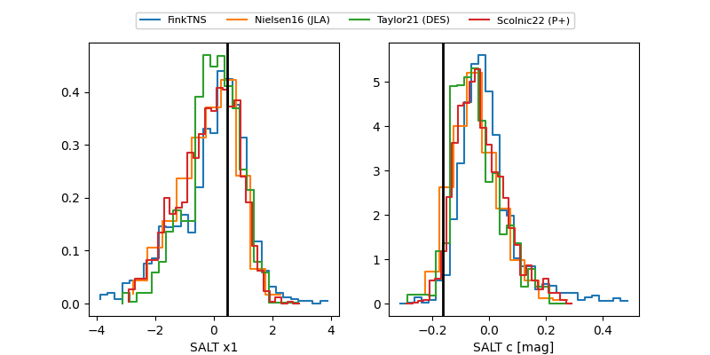

2025ahqq
Target 2025ahqq at 2025-12-22 14:03
Aliases and brokers:
FINK: fink-portal.org/ZTF25acjgiuj
Lasair: lasair-ztf.lsst.ac.uk/objects/ZTF25acjgiuj
ALeRCE: alerce.online/object/ZTF25acjgiuj
TNS: wis-tns.org/object/2025ahqq
YSE: ziggy.ucolick.org/yse/transient_detail/2025ahqq
alt names
ZTF25acjgiuj (ztf,fink_ztf)
2025ahqq (tns,yse)
Coordinates:
equatorial (ra, dec) = 41.1491,+4.34835
equatorial (HMS+DMS) = 02:44:35.78,+04:20:54.06
galactic (l, b) = (168.2194,-48.31929)
Flags:
Photometry:
last ztfg=19.97
1 ztfg detections
Lightcurve

Visibility


Additional plots
